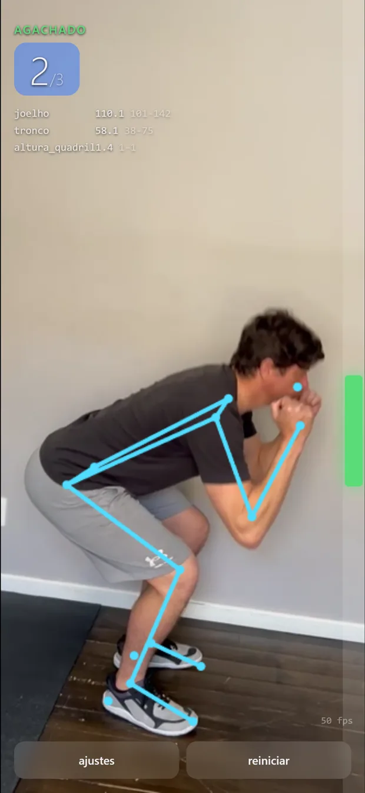
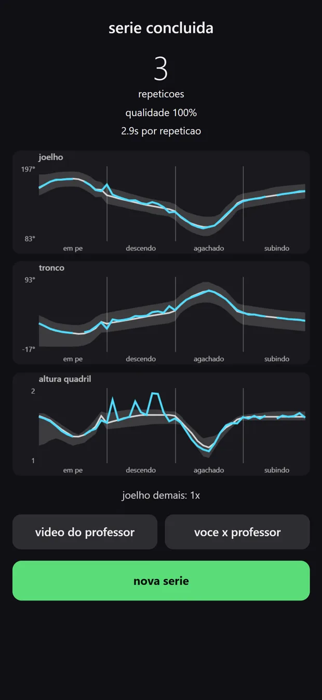
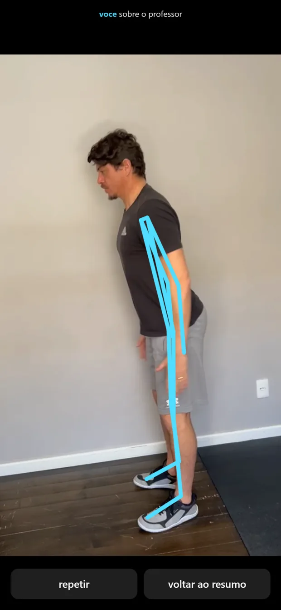

Conta as repetições
Só fecha a contagem quando o movimento passa pela amplitude esperada e volta. Repetição parcial não conta, por desenho.
Apoie o celular de pé, fique de lado, treine. O Formi conta as repetições, avisa quando a execução sai da faixa correta e conduz o ritmo — sem acessório, sem cinta, sem relógio.
iPhone · em breve na App Store



De pé, numa superfície firme, da altura da cintura para cima.
Afaste-se até o corpo inteiro caber no quadro. A distância muda com a câmera de cada aparelho, e o app fala o que ajustar até acertar.
A contagem começa sozinha quando você entra em posição. Nada de tocar na tela no meio da série.
Só fecha a contagem quando o movimento passa pela amplitude esperada e volta. Repetição parcial não conta, por desenho.
Profundidade, inclinação do tronco, alinhamento do joelho: o desvio é falado enquanto dá tempo de ajustar.
O app chama a próxima repetição sempre com você de pé — nunca no meio do esforço.
No fim da série, os números da execução e a sua trajetória sobreposta à do professor.
Duas repetições do movimento antes de começar, para não restar dúvida do que é para fazer.
Voz, esqueleto na tela, fantasma, demonstração, condução de ritmo: cada apoio desliga sozinho. Quem já sabe executar fica só com a contagem.
O Formi analisa o vídeo dentro do seu iPhone, quadro a quadro, e descarta. Não é uma promessa de política: é como o app foi construído.
Agachamento livre (de perfil e frontal) e flexão de solo. Cada exercício é um arquivo de definição que o app carrega — a biblioteca cresce por atualização de conteúdo, sem precisar de versão nova na loja.
O Formi não é um dispositivo médico, não faz diagnóstico e não substitui a avaliação de um profissional de educação física ou de saúde. Em caso de dor, lesão ou restrição de movimento, procure orientação antes de usar.